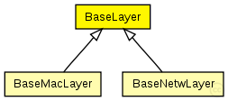

This documentation is released under the Creative Commons license
This documentation is released under the Creative Commons licenseC++ definition: click here
Base module for all layer modules. Defines the in and out gates
The following diagram shows usage relationships between types. Unresolved types are missing from the diagram. Click here to see the full picture.
The following diagram shows inheritance relationships for this type. Unresolved types are missing from the diagram. Click here to see the full picture.
| BaseMacLayer (simple module) |
Base module for every mac layer module |
| BaseNetwLayer (simple module) |
Base module for every network layer module |
| Name | Type | Default value | Description |
|---|---|---|---|
| notAffectedByHostState | bool | false |
| Name | Direction | Size | Description |
|---|---|---|---|
| upperGateIn | input |
from application layer |
|
| upperGateOut | output |
to application layer |
|
| upperControlIn | input |
control from application layer |
|
| upperControlOut | output |
control to application layer |
|
| lowerGateIn | input |
from NIC |
|
| lowerGateOut | output |
to NIC |
|
| lowerControlIn | input |
control from NIC |
|
| lowerControlOut | output |
control to NIC |
// // Base module for all layer modules. Defines the in and out gates // simple BaseLayer { parameters: bool notAffectedByHostState = default(false); gates: input upperGateIn; // from application layer output upperGateOut; // to application layer input upperControlIn; // control from application layer output upperControlOut; // control to application layer input lowerGateIn; // from NIC output lowerGateOut; // to NIC input lowerControlIn; // control from NIC output lowerControlOut; // control to NIC }
This documentation is released under the Creative Commons license